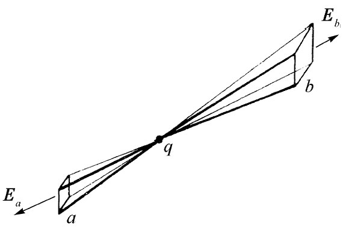
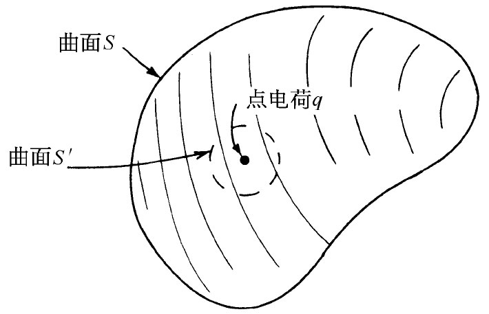
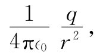

我们现在要来导出一个场方程式，它明确而又直接地与力的平方反比规律这个事实有关。场随距离的平方反比地变化，这对于某些人来说，似乎是“理所当然的”，因为“那是事情扩展的途径”。试考虑一个光源及正从它发射出的光：通过一个顶端位于源处的锥体所割出的面的光量，不管这个面所在处的半径大小如何，处处相等。只要光能守恒，这就是必然的。单位面积的光量——光强——必然与锥体所割出的面积成反比地变化，也就是与光源的距离的平方成反比。由于同样的理由，电场肯定会与距离的平方反比地变化！可是，这里并没有“同样的理由”这种东西。没有人能够讲，电场就像光那样，是某种守恒的东西流动的量度。假如 有一个电场“模型”，其中电场矢量代表流或某种飞出去的小“子弹”的运动方向和速率，而且 如果模型要求这些子弹守恒，即一旦被射出去就没有一颗子弹会丢失，那么也许我们能够“看到”该平方反比定律是必需的。另一方面，要求有某种能够表达这一物理概念的数学方式。假如 电场像发射出去的守恒的子弹，那么它就将随距离的平方成反比地变化，而我们也将可能用一个方程——那纯粹是一种数学形式——来描写那种行为了。现在不妨想想这个方法，只要我们不说电场是由子弹构成 的，但要认识到，我们是在用一个模型协助求得正确的数学答案。
甚至假定，我们想象一下电场确实代表某种守恒东西的流——在除了电荷所在处外的一切地方（电场总得从某处开始产生！）。我们设想，不管什么东西，都是从电荷流出进入周围空间的。如果E就是这种流的矢量（正如热流中的h），那么在点源附近它将有一个1/r2 的依赖关系。现在，我们要用这个模型找出如何用一种更深刻或更抽象的办法来陈述这一平方反比定律，而不仅仅是说“平方反比”（你也许觉得奇怪，我们为什么要避免对这么一个简单定律的直接陈述，而要用另一种方式隐蔽地暗示同样的事情。但请忍耐一点！它将会证明确实很有用）。
我们要问：从点电荷附近的任一个闭合曲面出来的E“流”是什么？首先，让我们取一个简易闭合面——如图4-5所示的一个。如果E场像流，则从这一个箱子里出来的净流应该等于零。只要从这一个面跑出去的所谓“流量”指的是E的法向分量的面积分——即E的通量，则我们就得到上述结果。在那些侧向面上，法向分量为零。而在那些球面上，法向分量En 恰好就是E的大小——对于那个较小的面为负，而对于那个较大的面为正。E的大小随1/r2 而减少，但表面积却正比于r2 ，因而两者之积就与r无关了。进入a面的E的通量恰好被跑出b面的那个通量所抵消。从S出来的总流量为零，也就是说，对于这个曲面，
∫S En da=0. （4.30）
图4-5 从曲面S出来的E的通量为零
其次，我们将证明两个端面可以相对于径线倾斜而不会改变该积分式（4.30）。尽管这是普遍正确的，但对于我们的目的来说，却只需证明当两个端面很小，以致它们对着来自源心的一个小角——实际上是一个无限小角——时，它是对的就行了。在图4-6中，我们画出了一个其“侧面”为径向而其“端面”倾斜着的曲面S。在这图中的端面不小，但你仍想象端面非常小的情况。因此，在面上场E将足够均匀，以致我们可以只用它在曲面中心处的值。当我们把该面倾斜一个角度θ时，它的面积会增大一个因子1/cosθ。但E垂直于该面的分量En 则减少一个因子cosθ，乘积En Δa保持不变。这样，从整个曲面S出来的通量仍为零。
图4-6 从曲面S出来的E的通量为零
到此不难看出，从任何 曲面S包围着的体积中出来的通量必为零。任何一个体积都可认为是由如图4-6所示的单元构成的。整个体积的表面完全可分割成一对一对的端面，而由于进出这些端面的通量成对地互相抵消，所以从整个曲面S出来的总通量就等于零。这个意思由图4-7说明。这样，我们就有了一个普适的结果。那就是，在一个点电荷的场中，从任何 闭合曲面S出来的通量均为零。
图4-7 任一个体积都可想象成完全由无限多个削去两头的锥体构成。从每一锥体断面一端的E的通量与从另一端的通量相等而相反。因此，从曲面S出来的总通量就是零
可是要注意！上述证明只是在曲面S不包围 电荷时做出的。假如有一个点电荷位于该曲面之内 ，那将会怎样呢？我们仍可将该曲面分割成由通过电荷q的各径向线所围成的各成对面积，如图4-8所示。通过这两个面的通量仍旧相等——用与上面同样的论证——只是现在这两个通量有了相同 的符号，因此从包围 一个电荷的曲面出来的通量并不 等于零。那么，它等于什么呢？我们可用一点小小技巧把它求出来。假想一个完全在原来曲面S之内的小曲面S′包围该电荷，如图4-9所示。这样，就将此电荷从“内部”“移出”，从而在由S和S′两个曲面之间 所包围的体积内就没有电荷了。应用与上面所给出的相同的论证，从这一个体积出来的总通量（包括通过S′的）就是零。这些论证实际上告诉我们，通过S′面而进入 该体积的通量与通过S面跑出去的通量彼此相等。
|  |  |
| 图4-8 如果曲面内存在电荷，则出来的通量不等于零 | 图4-9 通过S面的通量与通过S′面的通量相同 |
图4-10 通过一个含有点电荷q的球面的通量为q/∈0
由于我们可以任意选取任何形状的S′面，所以就让我们使它成为一个以该电荷为中心的、如图4-10所示的那种球面吧。这样，便可以很容易地算出通过这个面的通量。如果该小球面的半径为r，则在球面上的E值处处都是

其方向始终垂直于球面。如果把E的法向分量乘以该面面积，则可以求出通过S′面的总通量：
这是一个与球面半径无关的数值！因此，我们知道：通过S面出来的通量也为q/∈0 ——一个与S的形状无关的值，条件是电荷q必须处在该面之内。
可以把此结论写为：
让我们回到“子弹”的比拟上来，并看看它是否有意义。上述定理说明：如果闭合曲面内没有那支发射子弹的枪，则穿过该面的净子弹流为零；但若枪已包围在曲面之内，则无论该面的大小及形状如何，穿出去的子弹数目相同——它由枪的子弹产生率给出。对于守恒的子弹来说，所有这一切似乎很合理。这个模型告诉我们的东西，是否比仅仅由式（4.32）得到的东西要多呢？迄今还没有谁能成功地使这些“子弹”除了产生这一定律以外，还能完成其他任务。此后，它们就只会产生错误。这就是今天我们宁愿完全抽象地去表达电磁场的原因。